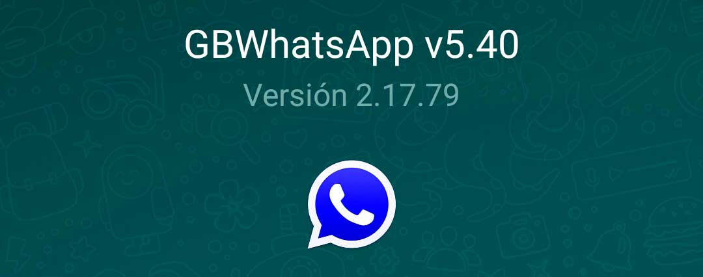
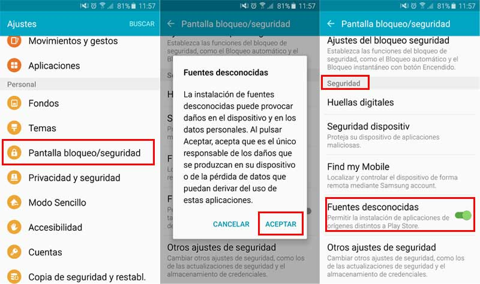

Mantenernos comunicados es algo que necesitamos día a día, ya sea por motivos laborales, familiares o simplemente para estar en contacto con otras personas. Actualmente existen miles de maneras de mantener comunicación, que van desde los ya casi extintos mensajes de texto hasta los programas de mensajería tales como: Whatsapp, Telegram, Skype,etc.
Los programas de mensajería con el paso del tiempo se han convertido en redes sociales, pues permiten intercambiar ideas, emociones, sueños o quizá también conocer a una pareja...quien sabe! Unos mas eficientes que otros, con sus pros y sus contras. Mientras que Whatsapp por ejemplo es usado en dispositivos móviles con múltiples sistemas operativos y con más de un billón de usuarios alrededor del mundo adolece de ciertos beneficios que otros cuentan.
Aplicaciones como Telegram cuentan con comunidades gigantescas, permiten el intercambio de información de manera mas relajada, sin preocupaciones de limites en tamaño de archivos multimedia y además dan mayor libertad y protección a la privacidad.
Sin embargo es muy difícil adoptar una aplicación nueva cuando ya estamos acostumbrado a otra que nos resulta mas cómoda y fácil de usar. Además ¿quien querría utilizar una aplicación que tus amigos no comparten?
Pues la respuesta a ello es muy sencilla. Usar una versión personalizada de una aplicación ya existente y de eficiencia comprobada, llenando los huecos que la oficial posee pero cuyos desarrolladores no desean modificar aun en contra de las peticiones de los usuarios, es ahi donde nace “Whatsapp Plus o Whatsapp GB”.
GBWhatsapp
Es una de las mejores modificaciones de Whatsapp para dispositivos android y de muy facil instalación, por lo tanto puedes instalarlo en tu dispositivo sin mayores inconvenientes. GBWhatsapp es una modificación de la versión original de Whatsapp y permite hacer muchas cosas como: ocultar tu estado en linea cuando estas usando Whatsapp, ocultar el segundo cheque, aplicar temas y mas.
Muchos de ustedes estan aburridos de usar la aplicación oficial de Whatsapp con el mismo tema y sin cambios en su apariencia o funcionalidad.
Otra de las ventajas a tomar en cuenta es que así como puedes utilizarla para sustituir a la versión oficial, también puedes tener dos versiones de Whatsapp a la ves, la oficial y GBWhatsapp instaladas en el mismo dispositivo.
Para instalarlo previamente debes de ir a configuración, seguridad y activar la opcion de fuentes desconocidas si aun no la tienes activa en tu teléfono móvil.
En otras versiones de android puede aparecer bajo la opción de Privacidad.
Pasos para su instalación
- Primero, debes descargar la aplicación oficial de GBWhatsapp desde el link en la parte inferior de la pagina.
- Después de descargar GBWhatsapp apk de el link, clic en la apk para iniciar el proceso de instalación. Después de unos segundos el proceso de instalación terminará indicando que la aplicación se instaló con éxito.
- Ahora simplemente debes abrir la aplicación, te preguntará por tu número de teléfono para verificar tu identidad.
- Después de verificar satisfactoriamente tu numero puedes abrir la aplicación y disfrutar de sus geniales características adicionales. Obviamente, puedes instalar GBWhatsapp y también tener instalado a la vez Whatsapp oficial asi podrás disfrutar de dos cuentas de whatsapp en el mismo equipo.
Link de la página oficial de GBWhatsapp
Links alternativos:
OPCION 1: GB WhatsApp V 5.40
OPCION 2: GB WhatsApp+ v5.40
OPCION 3: GB WhatsApp3 v5.40
Telegram, una opción a tomar en cuenta
Si te parece muy complicado el proceso de instalación de GB Whatsapp, pero quieres hacer uso de una alternativa confiable y efectiva. Una de las mejores opciones es telegram, completamente gratuito desde la PlayStore
De esta manera se puede descargar e instalar fácilmente GBWatsapp en dispositivos android, incluso puede ser utilizado en tablets. Se actualiza constantemente por lo cual también esta al día con las nuevas actualizaciones de Whatsapp oficial. Cualquier duda o inquietud al respecto pueden comunicarse a mi correo electrónico o a mi Whatsapp, espero esta aplicación sea de mucha ayuda y que la disfruten.